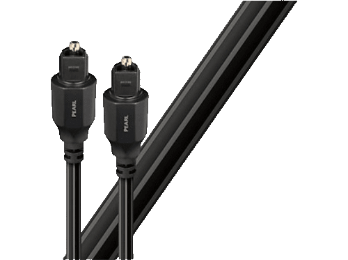

Cable de fibra òptica - Audioquest Òptic Pearl 1.5 m
| Tipus de dispositiu | Cable de fibra òptica |
|---|---|
| Longitud del cable | 1.5 m |
| Tipus de connector | Mascle |
| Màxima resolució que pot transportar | Fins a 8k |
| Color del producte | Negre |
| Contingut | x1 Cable de fibra òptica |
- El cable de fibra òptica Audioquest Òptic Pearl 1.5 m de color negre és ideal per a televisió, vídeo, àudio, connexions de xarxa.
- Fibra òptica d´alta qualitat, estructura de múltiples fils, revestiment gruixut. Optimitzat per a tots els senyals d'àudio digital Dolby Digital i DTS.
- Oblida els senyals analògics i passa't als digitals.